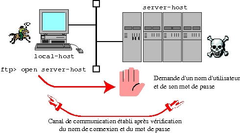
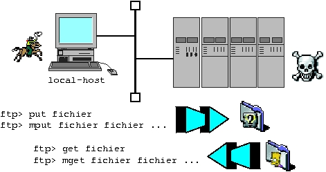

suivant: Connexion automatique - commande
monter: Commandes usuelles de communication
précédent: Connexion à une autre
Table des matières
Index
Syntaxe :
ftp [-g] [-i] [-n] [v] [host]
« ftp » est une famille de commandes pour les opérations de manipulation de fichiers ou de répertoires à travers le réseau.
Vous pouvez importer ou exporter des fichiers à partir d'une machine distante (sous UNIX ou non), en utilisant soit le mode de transfert
ASCII, soit le mode de transfert binaire.
Vous pouvez :
- mettre à jour, renommer et supprimer des fichiers,
- lister le contenu de répertoires,
- changer, créer et supprimer des répertoires,
- vérifier l'état, changer les options,
- demander de l'aide.
« ftp » admet quatre options :
| -g |
: |
| inhibition des métacaractères. |
| |
|
| Lorsque cette option n'est pas précisée, par défaut, les
métacaractères sont interprétés pour l'importation ou l'exportation
de fichiers. Pour plus de précisions sur les métacaractères,
reportez vous à la section ![[*]](crossref.png) . . |
| -i |
: |
| inhibition du mode interactif sur les manipulations de
fichiers. |
| |
|
| Le mode interactif est actif par défaut. |
| -n |
: |
| désactivation de la connexion automatique. |
| |
|
| La connexion automatique est autorisée. |
| -v |
: |
| mode verbose. |
| |
|
| En l'absence de cette option, « ftp » utilise le mode verbose
uniquement si la sortie standard est associée à un terminal. |
Quelques-unes des commandes de « ftp » sont expliquées ci-dessous. Dans les explications, « server-host » désigne la machine sur laquelle on se connecte avec « ftp ». « local-host » désigne la machine sur laquelle la commande « ftp » a été lancée. La figure
illustre les terminologies utilisées.
Figure:
Terminologie pour la description de
« ftp ».
|
|
Apercu des commandes ftp :
- open server-host [port-number]
-
Etablit une connexion avec « server-host » en utilisant un numéro de port
si spécifié. Si aucun port n'est précisé, « ftp » essaie de
contacter un serveur avec le numéro de port standard.
- user user_name [password] [account]
-
Connexion sous l'identité « user_name » sur « server-host » ouverte avec la commande « open ». La figure
illustre l'établissement d'une connexion.
Figure:
Etablissement d'une connexion ftp
|

|
- glob
-
Autorise l'usage des métacaractères. Si cette option est activée,
« ftp » envoie les métacaractères à « server-host » pour qu'il
puisse les interpréter au niveau des noms de fichiers et des
répertoires existants. La substitution des métacaractères est
toujours faite avec la commande « ls ». Pour plus de précisions
sur les métacaractères, preportez-vous à la section .
- binary
-
Positionne l'option binaire pour le type de transfert de fichiers.
- ls [remote_dir [local_file]
- ]
Affiche les noms des fichiers du site distant « remote_dir »
à l'écran, ou éventuellement la redirige dans un fichier local
« local_file ». Si « remote_dir » et « local_file » ne sont pas précisés,alors le répertoire de travail
distant est affiché sur la sortie standard.
- put local_file [remote_file]
-
Copie un fichier local « local_file » vers le site distant
sous le nom « remote_file ». Si « remote_file » n'est
pas spécifié, « ftp » copie le fichier sous le même nom. La figure
illustre l'envoi et la réception de fichiers
entre un serveur et un client « ftp ».
- mput local_file local_file ...
-
Copie plusieurs fichiers du site local vers le site distant. Les
fichiers de destination ont les mêmes noms que les fichiers locaux
d'origine. Si l'option « glob » est activée, les
métacaractères sont interprétés. La figure
illustre l'envoi et la réception de fichiers entre un serveur et un
client « ftp ».
- get remote_file [local_file]
-
Copie un fichier distant « remote_file » sur le système local
sous le nom « local_file ». Si « local_file » n'est
pas précisé, « ftp » copie le fichier avec le même nom. La figure
illustre l'envoi et la réception de fichiers
entre un serveur et un client « ftp ».
- mget remote_file remote_file ...
-
Copie plusieurs fichiers distants vers le système local. Si l'option
« glob » est activée, les métacaractères sont interprétés. La figure
illustre l'envoi et la réception de fichiers
entre un serveur et un client « ftp ».
Figure:
Envoi/Réception de fichier(s) de
« server-host » vers « local-host » avec « ftp ».
|

|
- close
-
Ferme la connexion avec « server-host ». La commande « close » ne permet pas de sortir de « ftp » si la connexion a été
établie avec une commande « open ».
- quit ou bye
-
Les commandes « quit » et « bye » ont le même effet.
Elles ferment la connexion avec « server-host » si une
connexion était ouverte et sort de « ftp ».
Exemple 3..1 :
Utilisation de « ftp » dans un programme shell
Vous pouvez utiliser « ftp » dans un programme shell en respectant
certaines règles. Voici un exemple d'utilisation de « ftp » dans un
programme Bourne Shell.
(
for host in willow arthur merlin
do
echo "
open $host
user lancelot dulac
binary
mput excalibur*
close
"
done
) | ftp -i -n
Ce programme shell représente un risque au niveau de la sécurité (mot de passe en clair dans une procédure). Ce type de programme est à utiliser avec parcimonie. Pour plus de renseignements, consultez « ftp(1) ».
suivant: Connexion automatique - commande
monter: Commandes usuelles de communication
précédent: Connexion à une autre
Table des matières
Index
baudry@esme.fr